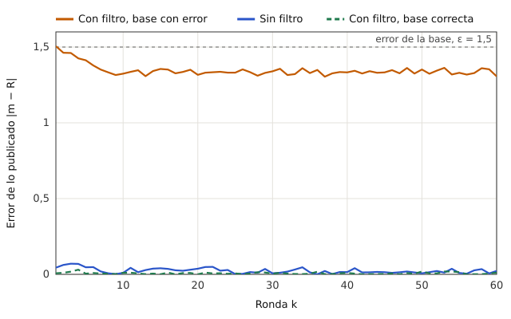
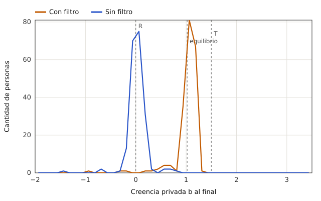
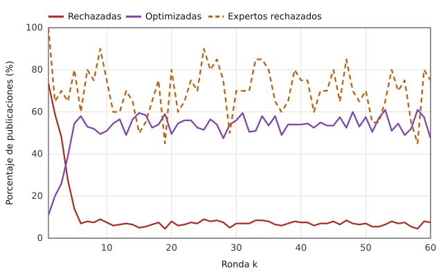
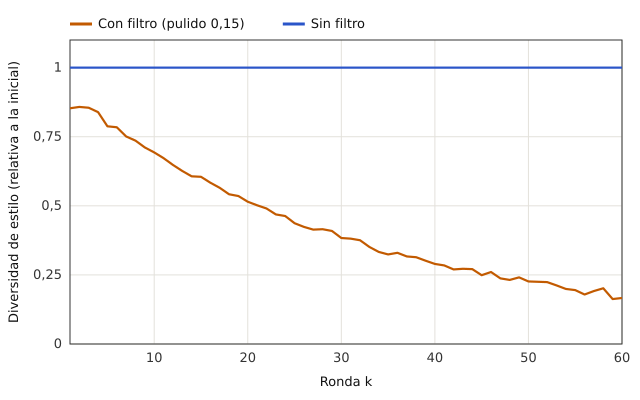
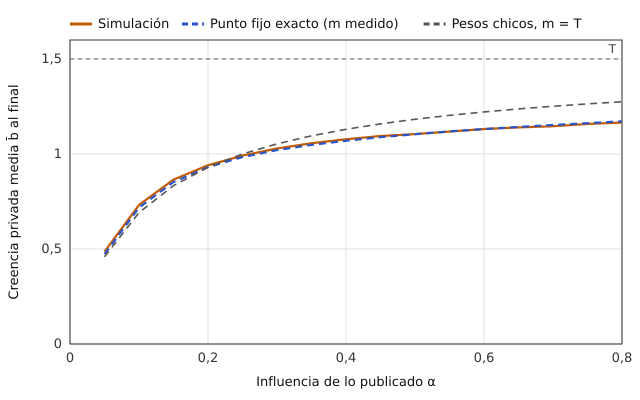
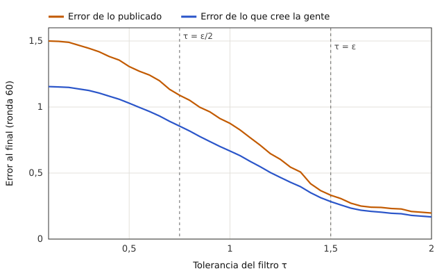

Preprint · documento de trabajo sin revisión por pares
Un filtro de consenso: simulación de una red que solo publica lo que coincide con su base de verdad
A consensus filter: simulating a network that only publishes what agrees with its ground truth
Bruno Loiacono · Estudiante de Física, Universidad de Buenos Aires · Noviembre de 2026
Resumen
Este trabajo estudia con un modelo de agentes la premisa de una novela distópica: una red social en la que una IA solo publica las conclusiones que coinciden con su base de «verdad objetiva». Cada persona combina evidencia propia, con ruido, con lo que lee publicado; el filtro aprueba, reescribe o rechaza cada conclusión según su distancia a la base. Se compara la misma población, con el mismo azar, con y sin filtro. Con la base correcta, el filtro funciona: el error de lo publicado cae a 0,01. Con un error de 1,5 en la base, lo publicado se queda en 1,31 (0,02 sin filtro), decir la verdad se rechaza, el 65,5 % de las publicaciones de los expertos se rechaza y la diversidad de estilo cae al 17 %. Las creencias privadas se estabilizan en un punto fijo que se deriva en forma cerrada y que coincide con la simulación, con diferencias menores que 0,015 en todo el rango de influencia social estudiado. Se discuten los antecedentes históricos, los argumentos de Mill y Popper, la evidencia sobre la sabiduría de las multitudes, la conformidad y la homogeneización por IA, y qué distingue a un consenso legítimo de una base de verdad impuesta.
Abstract
This paper uses an agent-based model to study the premise of a dystopian novel: a social network where an AI only publishes conclusions that agree with its “objective truth” database. Each person combines noisy private evidence with what they read; the filter approves, rewrites or rejects each conclusion according to its distance from the database. The same population, with the same random draws, is run with and without the filter. With a correct database the filter works: the error of published content falls to 0.01. With an error of 1.5 in the database, published content stays at 1.31 (0.02 without the filter), stating the truth is rejected, 65.5% of the experts' posts are rejected and stylistic diversity drops to 17%. Private beliefs settle at a fixed point derived in closed form, which matches the simulation within 0.015 over the whole range of social influence studied. Historical precedents, Mill's and Popper's arguments, evidence on the wisdom of crowds, conformity and AI-driven homogenization are discussed, together with what distinguishes a legitimate consensus from an imposed ground truth.
Palabras clave: dinámica de opiniones; moderación de contenidos; modelo de Friedkin y Johnsen; sabiduría de las multitudes; homogeneización; distopía.
Keywords: opinion dynamics; content moderation; Friedkin–Johnsen model; wisdom of crowds; homogenization; dystopia.
1. Introducción
La idea que da origen a este trabajo es la premisa de una novela: una red social en la que una IA modera todo lo que se publica según una base de «verdad objetiva». No censura opiniones en el sentido tradicional: se puede escribir con cualquier estilo, desde cualquier punto de vista, con cualquier argumento. Lo único que no se puede es llegar a otra conclusión. Si la conclusión coincide con la base, se publica, pulida; si difiere un poco, se corrige; si difiere mucho, se rechaza como desinformación.
Para que la novela funcione, el sistema tiene que ser creíble: tener beneficios reales (menos desinformación, menos ruido) y, aun así, dar miedo. El motor de la trama es un evento: un error en la base de verdad que nadie puede corregir, porque cualquier corrección es, por definición, una conclusión distinta de la base.
Este trabajo traduce la premisa a un modelo mínimo de dinámica de opiniones y mide sus consecuencias. La sección 2 reúne los antecedentes: la tradición distópica, los casos en que un consenso equivocado castigó a quien tenía razón, los argumentos filosóficos a favor de dejar hablar al que disiente, los modelos matemáticos de opiniones y la evidencia empírica sobre multitudes, conformidad, moderación y homogeneización. La sección 3 define el modelo y deriva el equilibrio de las creencias privadas. La sección 4 compara las corridas con y sin filtro y pone a prueba la derivación. La sección 5 discute qué distingue a un consenso legítimo de la base del filtro y qué deja afuera el modelo.
2. Antecedentes
2.1. La tradición distópica
La novela distópica del siglo XX imaginó muchas formas de controlar lo que la gente piensa. En 1984, Orwell (1949) imaginó un Ministerio de la Verdad que reescribe el pasado y una neolengua diseñada para que ciertos pensamientos no se puedan formular. En Un mundo feliz, Huxley (1932) imaginó un control sin violencia, por placer, condicionamiento y distracción. Postman (1985) contrapuso las dos: Orwell temía que alguien prohibiera los libros; Huxley, que no hiciera falta prohibirlos porque nadie querría leerlos. Orwell temía que se ocultara la verdad; Huxley, que la verdad se ahogara en un mar de irrelevancia.
El filtro de consenso tiene un pie en cada una. Es orwelliano en su núcleo, porque hay una verdad oficial, pero huxleyano en su presentación: no se siente como censura sino como un servicio que mejora la conversación. Esa ambigüedad es lo que lo hace creíble.
2.2. Cuando el consenso se equivoca
En 1847, Ignaz Semmelweis trabajaba en la maternidad del Hospital General de Viena. Notó que en la sala atendida por médicos y estudiantes la mortalidad por fiebre puerperal era varias veces mayor que en la sala atendida por parteras, concluyó que los médicos llevaban a las parturientas «partículas cadavéricas» de la sala de autopsias e impuso el lavado de manos con solución de cal clorada. La mortalidad cayó. La comunidad médica lo rechazó: la idea contradecía la teoría dominante y, de paso, acusaba a los médicos de matar a sus pacientes. Semmelweis publicó sus resultados recién en 1861 (Semmelweis 1861) y murió en 1865, antes de que la teoría de los gérmenes le diera la razón. Hoy se llama reflejo de Semmelweis a la tendencia a rechazar evidencia que contradice normas establecidas.
Hay otros casos conocidos. Alfred Wegener propuso que los continentes se habían movido (Wegener 1915), con evidencia de costas que encajan y de fósiles y rocas iguales a ambos lados del Atlántico; los geólogos lo rechazaron durante décadas, en parte porque no tenía un mecanismo convincente, hasta que la tectónica de placas le dio la razón en lo esencial en los años sesenta. Warren y Marshall (1983) describieron bacterias curvas en el estómago de pacientes con gastritis, cuando el consenso atribuía las úlceras al estrés y al ácido; la hipótesis bacteriana tardó años en aceptarse y recibió el Premio Nobel de Medicina de 2005 (Nobel Assembly at Karolinska Institutet 2005). Shechtman et al. (1984) informaron un patrón de difracción con una simetría que la cristalografía consideraba imposible; según la Academia Sueca, el descubrimiento fue muy controvertido y a Shechtman le pidieron que dejara su grupo de investigación, antes de recibir el Nobel de Química de 2011 (The Royal Swedish Academy of Sciences 2011).
El caso más cercano a la distopía es el de Trofim Lysenko en la Unión Soviética (Medvedev 1969). Lysenko rechazaba la genética mendeliana; con el apoyo de Stalin, en la sesión de la Academia Lenin de Ciencias Agrícolas de agosto de 1948 su doctrina se declaró oficial y la genética se proscribió. Los genetistas fueron despedidos, y Nikolái Vavílov, perseguido desde antes, había muerto en prisión en 1943. Es la versión real de «un error en la base de verdad que nadie puede corregir»: una conclusión oficial, sostenida por quien controla lo que se publica, que convirtió en disidentes a quienes tenían razón.
Estos casos no muestran que el consenso científico suela estar equivocado: casi siempre es la mejor conclusión disponible. Muestran algo más específico: que el consenso se corrige gracias a quienes lo contradicen con evidencia, y que esa corrección es lenta incluso cuando los disidentes pueden publicar. En la red del filtro, no pueden.
2.3. Por qué dejar hablar al que se equivoca
En el segundo capítulo de Sobre la libertad, Mill (1859) da cuatro argumentos a favor de la libertad de discusión. La opinión silenciada puede ser verdadera, y negarlo es suponerse infalible. Aunque sea falsa, puede contener una parte de verdad que solo el choque de opiniones permite completar. Aunque la opinión dominante sea toda la verdad, si no se la discute se sostiene como un prejuicio. Y, por último, su sentido mismo se pierde: se vuelve una fórmula muerta. El filtro vulnera los cuatro. El primero es el del error en la base; el tercero y el cuarto aparecen incluso con la base correcta, porque si nadie puede publicar otra conclusión, nadie tiene que defender la correcta.
Popper (1945) sostuvo que una sociedad que no permite intentar refutar sus verdades oficiales se cierra al aprendizaje: el conocimiento se mantiene mientras resiste los intentos de refutarlo. El filtro inmuniza la base contra la refutación. Kuhn (1962) describió cómo las anomalías, los resultados que no encajan en el paradigma, se acumulan hasta provocar una crisis y un cambio. Para eso tienen que poder registrarse y circular. En la red del filtro, cada anomalía se rechaza antes de ser vista.
2.4. Modelos de dinámica de opiniones
DeGroot (1974) propuso que, en cada ronda, cada persona reemplaza su opinión por un promedio ponderado de las de los demás; bajo condiciones muy generales, el grupo converge a una opinión común, que depende de las opiniones iniciales y de los pesos, no de la verdad. Friedkin y Johnsen (1990) agregaron un ancla: cada persona mantiene un apego a su propia información además de dejarse influir. El resultado ya no es un consenso total sino un equilibrio entre el ancla y la influencia social. El modelo de este trabajo es de ese tipo, y su equilibrio se deriva en la sección 3.4.
Los modelos de confianza acotada (Deffuant et al. 2000; Hegselmann y Krause 2002) suponen que cada persona solo se deja influir por opiniones que están a menos de cierta distancia de la suya. Según esa distancia, la población converge, se polariza o se fragmenta. El filtro es una confianza acotada impuesta desde afuera y centrada en un punto fijo: la tolerancia es la distancia máxima a la base que se acepta.
2.5. La sabiduría de las multitudes y su fragilidad
Galton (1907) analizó unas 800 estimaciones del peso de un buey en una feria de ganado y encontró que la mediana estaba muy cerca del peso real: los errores independientes se cancelan. La condición clave es la independencia. Lorenz et al. (2011) mostraron en un experimento con 144 participantes que incluso una influencia social leve, ver las estimaciones de los demás, reduce la diversidad de las respuestas sin mejorar su precisión, y que los grupos se vuelven más confiados en resultados que pueden estar equivocados. Hong y Page (2004) mostraron, con un modelo de agentes, que un equipo elegido al azar en una población diversa de solucionadores puede superar a un equipo formado por los individualmente mejores, porque estos tienden a parecerse entre sí. El filtro elimina justamente la diversidad que permitiría encontrar el error.
2.6. Conformidad y silencio
En los experimentos de Asch (1956), los participantes juzgaban cuál de tres líneas era igual a una de referencia, rodeados de cómplices que daban unánimemente una respuesta equivocada; una parte considerable de las respuestas se ajustó al grupo, pero un solo compañero que diera la respuesta correcta reducía mucho la conformidad. En la red filtrada ningún disidente es visible. Noelle-Neumann (1974) propuso la espiral del silencio: quien cree que su opinión es minoritaria tiende a callarse, y al callarse la opinión parece todavía más minoritaria. El modelo de este trabajo todavía no incluye esa autocensura; es el primer paso del trabajo futuro.
2.7. Moderación, desinformación y homogeneización
Gillespie (2018) mostró que moderar no es un agregado de las plataformas sino su producto central, y que todos sus mecanismos, humanos o automáticos, se equivocan en las dos direcciones. El problema que el filtro dice resolver existe: Vosoughi et al. (2018) analizaron unas 126 000 historias difundidas en Twitter entre 2006 y 2017 y encontraron que las falsas llegaban más lejos, más rápido y a más gente que las verdaderas, y que los bots aceleraban por igual a unas y otras. Esa es la tentación del filtro: si la verdad pierde la carrera en una red libre, ¿por qué no ayudarla?
Hay también un costo de usar un único sistema. Kleinberg y Raghavan (2021) mostraron que cuando muchos decisores usan el mismo algoritmo, aunque sea el más preciso para cada uno por separado, la calidad global de las decisiones puede empeorar. El filtro es un monocultivo perfecto. El efecto de «pulido» del modelo también tiene evidencia: los textos escritos con ayuda de un mismo modelo de lenguaje son menos diversos entre sí (Padmakumar y He 2024), y las historias escritas con ideas de una IA resultan individualmente más creativas pero colectivamente más parecidas (Doshi y Hauser 2024). Por último, Shumailov et al. (2024) mostraron que los modelos entrenados con datos generados por modelos pierden primero las colas de la distribución original. Una red en la que todo pasó por el filtro sería un mal conjunto de entrenamiento para el futuro.
3. Modelo
3.1. Verdad, base y población
Hay una sola pregunta, con respuesta numérica. Todas las magnitudes de esta sección son adimensionales, medidas en la escala de esa pregunta, y todos los pesos están entre 0 y 1. La verdad real vale $R = 0$. El filtro usa una base de verdad
donde $\varepsilon$ es el error de la base. Hay $N$ personas; cada una tiene una creencia privada $b_i$ y un estilo de escritura $s_i \in [0,1]$. Las creencias iniciales son $b_i^{(0)} = R + \sigma_0\,\eta_i$ y los estilos iniciales, uniformes en $[0,1]$. Una fracción $f$ de la población son expertos, que pesan más su propia evidencia: $\beta_i = \beta_{\mathrm{e}}$ para ellos y $\beta_i = \beta$ para el resto.
3.2. Una ronda
Cada ronda $k$ tiene tres pasos. Primero, cada persona recibe una observación ruidosa de la verdad y acerca su creencia a ella:
con $\xi_i^{(k)}$ normales estándar independientes. Segundo, cada persona publica su conclusión, y el filtro decide según la distancia $d_i = |b_i' - T|$:
donde $\tau$ es la tolerancia. Tercero, cada persona lee el promedio $m^{(k)}$ de lo publicado y se acerca a él:
En la corrida sin filtro se publica todo, $p_i = b_i'$. Las dos corridas usan la misma semilla, de modo que la única diferencia es el filtro.
Aplicada a la verdad, la regla \eqref{eq:filtro} dice cuándo se puede publicar: como $|R - T| = |\varepsilon|$, decir exactamente la verdad se rechaza si $|\varepsilon| > 2\tau$, se reescribe como $T$ si $\tau < |\varepsilon| \le 2\tau$ y se aprueba si $|\varepsilon| \le \tau$.
3.3. Estilo
Lo que pasa el filtro sale «pulido» hacia un estilo promedio, y la persona adopta en parte la versión con que la publicaron:
con $\pi$ la intensidad del pulido y $a$ la adopción. Cada ronda publicada multiplica la distancia de $s_i$ a $\tfrac12$ por $1 - a\pi$; para quien publica en todas las rondas, la diversidad de estilo cae como $(1 - a\pi)^k$.
3.4. El equilibrio de las creencias privadas
Si lo publicado se estaciona en un valor $m$, las ecuaciones \eqref{eq:evidencia} y \eqref{eq:lectura} forman un mapa lineal con ruido para cada persona. Tomando el valor esperado y buscando el punto fijo, $b^* = (1-\alpha)\left[(1-\beta_i)\,b^* + \beta_i R\right] + \alpha m$, se obtiene
Cada término del numerador y del denominador es un peso adimensional multiplicado, en el numerador, por una creencia: $b_i^*$ tiene las unidades de $R$ y $m$, como corresponde. Si $\alpha = 0$, $b_i^* = R$; si $\beta_i = 0$, $b_i^* = m$. Para pesos chicos, $\alpha\beta_i \ll \alpha + \beta_i$, se recupera la forma del modelo de Friedkin y Johnsen (1990):
La creencia de equilibrio es un promedio ponderado entre lo que cada uno ve y lo que lee. La gente no cree del todo el error de la base, pero tampoco la verdad, y cuanto más pesa lo que lee frente a lo que ve, más cree el error.
El mismo mapa da el ancho de la distribución alrededor del punto fijo. Si $m$ es el mismo para todos, la varianza estacionaria de $b_i$ es
que también tiene las unidades de $\sigma^2$. La creencia media de la población es la mezcla $\bar b^* = (1-f)\,b^*(\beta) + f\,b^*(\beta_{\mathrm{e}})$.
3.5. Parámetros e indicadores
La tabla 1 resume los valores por defecto. Los indicadores se miden al final de la ronda 60: el error de lo publicado, $|m - R|$; el error de lo que cree la gente, $|\bar b - R|$; la fracción de publicaciones de expertos rechazadas, promediada en las últimas 10 rondas; y la diversidad de estilo de lo publicado, como desvío estándar relativo al desvío inicial.
| Símbolo | Significado | Valor |
|---|---|---|
| $N$ | personas | 200 |
| $K$ | rondas | 60 |
| $\varepsilon$ | error de la base, $T - R$ | 1,5 (0 en «base correcta») |
| $\tau$ | tolerancia del filtro | 0,5 |
| $\alpha$ | influencia de lo publicado | 0,3 |
| $\beta$ | peso de la evidencia propia | 0,1 |
| $f$ | fracción de expertos | 0,1 |
| $\beta_{\mathrm{e}}$ | peso de la evidencia en los expertos | 0,8 |
| $\sigma$ | ruido de la evidencia | 1 |
| $\sigma_0$ | dispersión inicial de las creencias | 2 |
| $\pi$ | pulido del estilo | 0,15 |
| $a$ | adopción del estilo publicado | 0,2 |
4. Resultados
Todas las cifras de esta sección salen de paper/figuras/generar.js, con la semilla 42 salvo que se indique otra cosa.
4.1. Con y sin error en la base
Con la base correcta ($\varepsilon = 0$), el filtro funciona como promete: el error de lo publicado termina en 0,01 y la verdad se aprueba. Es el argumento de quien defiende el sistema, y la novela lo necesita para que el sistema sea creíble.
Con $\varepsilon = 1{,}5$ y $\tau = 0{,}5$, decir la verdad se rechaza, porque $|\varepsilon| = 1{,}5 > 2\tau = 1$. El error de lo publicado termina en 1,31 con filtro y en 0,02 sin filtro (figura 1): la misma población, con el mismo azar, encuentra la verdad si puede publicar lo que observa. El error de lo que cree la gente es 1,03 con filtro y 0,02 sin filtro. La distribución de creencias privadas al final (figura 2) muestra un pico angosto entre la verdad y la base, donde se agrupan los no expertos, y una cola de expertos más cerca de la verdad.


4.2. Qué hace el filtro
En las últimas 10 rondas, el filtro rechaza el 6,5 % de todas las publicaciones, pero el 65,5 % de las de los expertos (figura 3). La mayoría de la población se acerca a $T$ y deja de ser rechazada; los que siguen de cerca su evidencia, que apunta a $R$, son los que quedan afuera. Con la base correcta el rechazo de expertos baja al 22 %: no desaparece, porque la evidencia de cada uno tiene ruido y a veces cae lejos de $T$.

4.3. Homogeneización del estilo
Con filtro, la diversidad de estilo de lo publicado termina en el 17 % de la inicial; sin filtro no cambia (figura 4). La ecuación \eqref{eq:estilo} da el orden de magnitud: con $a\pi = 0{,}03$, $(1 - a\pi)^{60} = 0{,}16$. El efecto no depende del error de la base (con la base correcta queda en el 15 %) ni del filtro de conclusiones: con $\pi = 0$ la diversidad se mantiene en el 100 %, aunque el error de lo publicado siga siendo 1,31.

4.4. El equilibrio de las creencias
En las últimas 10 rondas, lo publicado vale en promedio $m = 1{,}335$. Con ese valor, la ecuación \eqref{eq:equilibrio} predice una creencia media de 1,082 para los no expertos y de 0,466 para los expertos; la simulación da 1,085 y 0,524. La diferencia en los expertos es compatible con el ruido de promediar solo 20 personas con un desvío individual grande. La mezcla predice $\bar b^* = 1{,}021$, frente a 1,029 en la simulación. La ecuación \eqref{eq:varianza} predice un desvío de 0,090 para las creencias de los no expertos; la simulación da 0,091.
La figura 5 repite la comparación para $\alpha$ entre 0,05 y 0,8: la diferencia entre la simulación y la ecuación \eqref{eq:equilibrio} nunca supera 0,014. La aproximación \eqref{eq:fj} con $m = T$, que es la que se obtiene al razonar con pesos chicos y suponer que lo publicado vale exactamente $T$, sobrestima la creencia media: da 1,125 en lugar de 1,03 con los valores por defecto. Dos cosas la corrigen: el término $\alpha\beta_i$ del denominador y el hecho de que lo publicado queda por debajo de $T$, porque incluye conclusiones aprobadas del lado de la verdad.

Dos casos muestran la tesis de la novela con números. Con $\alpha = \beta = 0{,}1$, es decir, si la gente pesa igual lo que ve y lo que lee, la creencia media queda en 0,73 (la ecuación \eqref{eq:equilibrio} predice 0,72). Y con un 30 % de expertos en lugar de un 10 %, el error de lo que cree la gente baja de 1,03 a 0,94, pero el error de lo publicado no baja (1,33): los expertos creen mejor, pero no pueden publicarlo.
4.5. La tolerancia
La figura 6 muestra el error al final en función de $\tau$. Con $\varepsilon = 1{,}5$, la verdad pasa a ser publicable a partir de $\tau = 0{,}75$, pero reescrita: el autor ve publicada con su nombre una conclusión distinta de la que escribió. Recién con $\tau = 1{,}5$ se aprueba tal cual. Aun así, la corrección es lenta: con $\tau = 1{,}5$ el error de lo publicado todavía vale 0,33 en la ronda 60, y con $\tau = 2$, 0,20. La tolerancia, una decisión técnica, controla cuánto del error de la base sobrevive.

4.6. Dependencia del azar
Con las semillas 1 a 10, el error de lo publicado con filtro queda entre 1,30 y 1,36; sin filtro, entre 0,002 y 0,033. El error de lo que cree la gente con filtro queda entre 1,00 y 1,04; el rechazo de expertos, entre el 62,5 % y el 75 %; y la diversidad de estilo, entre el 16 % y el 18 %. Las conclusiones no dependen de la semilla.
5. Discusión y limitaciones
5.1. Por qué el filtro es creíble y por qué da miedo
El modelo reproduce la ambigüedad que la novela necesita. Con la base correcta, el filtro reduce el ruido y acelera la convergencia. Con un error, lo congela. Nada en el sistema distingue un caso del otro desde adentro: con base correcta o equivocada, lo publicado converge y casi nadie es rechazado, salvo los que siguen de cerca su propia evidencia.
El caso de Semmelweis, traducido al modelo, muestra lo que pasaría. La pregunta es cuánto de la mortalidad se debe a las manos de los médicos; la verdad es alta y la base del consenso de la época, cercana a cero. Semmelweis y unos pocos más son los expertos con $\beta_{\mathrm{e}}$ alto. Con un filtro de tolerancia chica, sus publicaciones se rechazarían, y sus colegas con dudas no leerían nada que las confirmara: su creencia se quedaría en el equilibrio \eqref{eq:equilibrio}. Con una tolerancia intermedia pasaría algo peor: sus publicaciones se optimizarían, y Semmelweis aparecería ante sus colegas confirmando el consenso. No hace falta un régimen malvado: basta un sistema bien intencionado, una base razonable para su época y una tolerancia elegida para frenar el ruido.
5.2. Consensos legítimos
La premisa podría leerse como un ataque al consenso en general. No lo es. Oreskes (2004) analizó resúmenes de artículos con revisión por pares sobre cambio climático global y no encontró ninguno que rechazara explícitamente el origen humano del calentamiento reciente. Cook et al. (2013) analizaron 11 944 resúmenes publicados entre 1991 y 2011: entre los que expresaban una posición, el 97,1 % respaldaba ese consenso. Lo que importa es cómo se llegó: miles de investigadores independientes, con datos y métodos distintos y la posibilidad abierta de publicar resultados contrarios. Ese consenso es un resultado de la libertad de disentir; la base del filtro es un punto de partida que la elimina.
La ciencia también publica sus fracasos. Fang et al. (2012) revisaron los 2047 artículos biomédicos retractados indexados en PubMed hasta mayo de 2012 y encontraron que el 67,4 % se había retirado por mala conducta y el 21,3 % por error. La Open Science Collaboration (2015) replicó 100 estudios de psicología: el 97 % de los originales tenía resultados significativos y solo el 36 % de las réplicas. La respuesta fueron prácticas que hacen más visible el trabajo, como el preregistro (Nosek et al. 2018). Es el mecanismo que el filtro rompe: una comunidad que puede publicar que se equivocó.
De esos ejemplos sale una lista de condiciones que tendría que cumplir un filtro para ser legítimo: que la base exprese grados de certeza y no una sola conclusión; que se revise periódicamente con un procedimiento público; que el disenso fundado quede registrado y visible; que haya una instancia independiente para apelar un rechazo; y que nadie que controle la base se beneficie de su contenido. Una distopía verosímil no empieza con un villano que apaga todo, sino con un sistema que cumplía esas condiciones y las fue abandonando, una por una.
5.3. Lo que el modelo deja afuera
- Nadie miente. Todos buscan la verdad con evidencia honesta; el único problema es el ruido. Agregar personas que publican falsedades a sabiendas haría al filtro más defendible con la base correcta, y la novela debería darle ese argumento al personaje que defiende el sistema.
- Nadie se organiza. No hay canales por fuera de la red. Una variante obvia es una fracción de personas que lee también lo que el filtro rechazó.
- Todos leen todo. Cada persona lee el promedio de lo publicado. En una red real cada uno ve una parte, y el error podría corregirse en unas comunidades y no en otras.
- La base no cambia. Una base que nunca cambia es un dogma; una que se actualiza con lo publicado, un círculo vicioso, porque solo se publica lo que coincide con ella; una que cambia según una autoridad externa, un poder político.
- Una sola pregunta. Un filtro con error en una pregunta entre miles correctas sería mucho más difícil de detectar.
- El estilo es un número. La homogeneización se modela como una contracción hacia un valor medio, no como texto real.
5.4. Usos para la novela
La simulación da materiales narrativos concretos: el experto cuyas publicaciones se rechazan dos de cada tres veces mientras su creencia privada está cerca de la verdad; la persona optimizada, que ve publicado con su nombre algo que no dijo; la mayoría que cree el error a medias, con dudas que no puede compartir; la sociedad en la que todos los textos suenan igual; y la tolerancia como una decisión técnica con consecuencias políticas enormes. El horror no está en el sistema en sí sino en que nadie puede saber, desde adentro, si la base es correcta.
6. Conclusiones y trabajo futuro
Un filtro que solo publica lo que coincide con su base de verdad funciona bien mientras la base es correcta y congela el error cuando no lo es. Con un error de 1,5 en la base, lo publicado se queda en 1,31, la gente cree el error a medias (1,03) y dos de cada tres publicaciones de los expertos se rechazan; sin filtro, la misma población encuentra la verdad, como en la sabiduría de las multitudes de Galton. Las creencias privadas se estabilizan en el punto fijo \eqref{eq:equilibrio}, que coincide con la simulación con diferencias menores que 0,015 y corrige la aproximación de pesos chicos. Los casos de Semmelweis, Wegener, Warren y Marshall, Shechtman y Lysenko, y los argumentos de Mill, Popper y Kuhn, explican por qué la corrección de un consenso necesita que los disidentes puedan hablar.
Quedan tres extensiones. La primera es la autocensura: personas que aprenden a escribir lo que pasa el filtro. Con ella, la espiral del silencio entraría en el modelo, el rechazo bajaría y el filtro parecería menos represivo justo cuando más funciona. La segunda es una regla de actualización de la base, que obliga a decidir quién la controla. La tercera es un modelo con muchas preguntas y redes de lectura parciales, para estudiar un error escondido entre miles de respuestas correctas.
Declaración de uso de IA
Este trabajo se redactó con asistencia de Claude (Anthropic), un modelo de lenguaje, a partir de una guía previa del autor. El modelo propuso la estructura, la redacción, la derivación del punto fijo \eqref{eq:equilibrio} y el script que genera las figuras; el alcance y las decisiones son del autor, que es responsable del contenido. Las referencias se verificaron contra Crossref, arXiv, Open Library, Project Gutenberg y las páginas citadas con paper/verificar_bib.py, y todas las cifras de la sección 4 salen de paper/figuras/generar.js.
Referencias
- Asch, S. E. (1956). Studies of independence and conformity: I. A minority of one against a unanimous majority. Psychological Monographs: General and Applied, 70(9), 1–70. https://doi.org/10.1037/h0093718
- Cook, J., Nuccitelli, D., Green, S. A., Richardson, M., Winkler, B., Painting, R., Way, R., Jacobs, P. y Skuce, A. (2013). Quantifying the consensus on anthropogenic global warming in the scientific literature. Environmental Research Letters, 8(2), 024024. https://doi.org/10.1088/1748-9326/8/2/024024
- Deffuant, G., Neau, D., Amblard, F. y Weisbuch, G. (2000). Mixing beliefs among interacting agents. Advances in Complex Systems, 3(1–4), 87–98. https://doi.org/10.1142/S0219525900000078
- DeGroot, M. H. (1974). Reaching a consensus. Journal of the American Statistical Association, 69(345), 118–121. https://doi.org/10.1080/01621459.1974.10480137
- Doshi, A. R. y Hauser, O. P. (2024). Generative AI enhances individual creativity but reduces the collective diversity of novel content. Science Advances, 10(28), eadn5290. https://doi.org/10.1126/sciadv.adn5290
- Fang, F. C., Steen, R. G. y Casadevall, A. (2012). Misconduct accounts for the majority of retracted scientific publications. Proceedings of the National Academy of Sciences, 109(42), 17028–17033. https://doi.org/10.1073/pnas.1212247109
- Friedkin, N. E. y Johnsen, E. C. (1990). Social influence and opinions. The Journal of Mathematical Sociology, 15(3–4), 193–206. https://doi.org/10.1080/0022250X.1990.9990069
- Galton, F. (1907). Vox populi. Nature, 75(1949), 450–451. https://doi.org/10.1038/075450a0
- Gillespie, T. (2018). Custodians of the Internet: Platforms, Content Moderation, and the Hidden Decisions That Shape Social Media. Yale University Press. https://openlibrary.org/works/OL19748063W
- Hegselmann, R. y Krause, U. (2002). Opinion dynamics and bounded confidence: Models, analysis and simulation. Journal of Artificial Societies and Social Simulation, 5(3), 2. https://www.jasss.org/5/3/2.html
- Hong, L. y Page, S. E. (2004). Groups of diverse problem solvers can outperform groups of high-ability problem solvers. Proceedings of the National Academy of Sciences, 101(46), 16385–16389. https://doi.org/10.1073/pnas.0403723101
- Huxley, A. (1932). Brave New World. Chatto & Windus. https://openlibrary.org/works/OL64365W
- Kleinberg, J. y Raghavan, M. (2021). Algorithmic monoculture and social welfare. Proceedings of the National Academy of Sciences, 118(22), e2018340118. https://doi.org/10.1073/pnas.2018340118
- Kuhn, T. S. (1962). The Structure of Scientific Revolutions. University of Chicago Press. https://openlibrary.org/works/OL45904278W
- Lorenz, J., Rauhut, H., Schweitzer, F. y Helbing, D. (2011). How social influence can undermine the wisdom of crowd effect. Proceedings of the National Academy of Sciences, 108(22), 9020–9025. https://doi.org/10.1073/pnas.1008636108
- Medvedev, Z. A. (1969). The Rise and Fall of T. D. Lysenko. Columbia University Press. https://openlibrary.org/works/OL3148872W
- Mill, J. S. (1859). On Liberty. John W. Parker and Son. https://www.gutenberg.org/ebooks/34901
- Nobel Assembly at Karolinska Institutet (2005). The Nobel Prize in Physiology or Medicine 2005: press release. https://www.nobelprize.org/prizes/medicine/2005/press-release/
- Noelle-Neumann, E. (1974). The spiral of silence: A theory of public opinion. Journal of Communication, 24(2), 43–51. https://doi.org/10.1111/j.1460-2466.1974.tb00367.x
- Nosek, B. A., Ebersole, C. R., DeHaven, A. C. y Mellor, D. T. (2018). The preregistration revolution. Proceedings of the National Academy of Sciences, 115(11), 2600–2606. https://doi.org/10.1073/pnas.1708274114
- Open Science Collaboration (2015). Estimating the reproducibility of psychological science. Science, 349(6251), aac4716. https://doi.org/10.1126/science.aac4716
- Oreskes, N. (2004). The scientific consensus on climate change. Science, 306(5702), 1686. https://doi.org/10.1126/science.1103618
- Orwell, G. (1949). Nineteen Eighty-Four. Secker & Warburg. https://openlibrary.org/works/OL1168083W
- Padmakumar, V. y He, H. (2024). Does writing with language models reduce content diversity?. En The Twelfth International Conference on Learning Representations (ICLR 2024). arXiv:2309.05196
- Popper, K. R. (1945). The Open Society and Its Enemies. Routledge. https://openlibrary.org/works/OL1984583W
- Postman, N. (1985). Amusing Ourselves to Death: Public Discourse in the Age of Show Business. Viking. https://openlibrary.org/works/OL137916W
- Semmelweis, I. P. (1861). Die Aetiologie, der Begriff und die Prophylaxis des Kindbettfiebers. C. A. Hartleben. https://openlibrary.org/works/OL11998181W
- Shechtman, D., Blech, I., Gratias, D. y Cahn, J. W. (1984). Metallic phase with long-range orientational order and no translational symmetry. Physical Review Letters, 53(20), 1951–1953. https://doi.org/10.1103/PhysRevLett.53.1951
- Shumailov, I., Shumaylov, Z., Zhao, Y., Papernot, N., Anderson, R. y Gal, Y. (2024). AI models collapse when trained on recursively generated data. Nature, 631(8022), 755–759. https://doi.org/10.1038/s41586-024-07566-y
- The Royal Swedish Academy of Sciences (2011). The Nobel Prize in Chemistry 2011: press release. https://www.nobelprize.org/prizes/chemistry/2011/press-release/
- Vosoughi, S., Roy, D. y Aral, S. (2018). The spread of true and false news online. Science, 359(6380), 1146–1151. https://doi.org/10.1126/science.aap9559
- Warren, J. R. y Marshall, B. (1983). Unidentified curved bacilli on gastric epithelium in active chronic gastritis. The Lancet, 321(8336), 1273–1275. https://doi.org/10.1016/S0140-6736(83)92719-8
- Wegener, A. (1915). Die Entstehung der Kontinente und Ozeane. Vieweg. https://openlibrary.org/works/OL6377719W